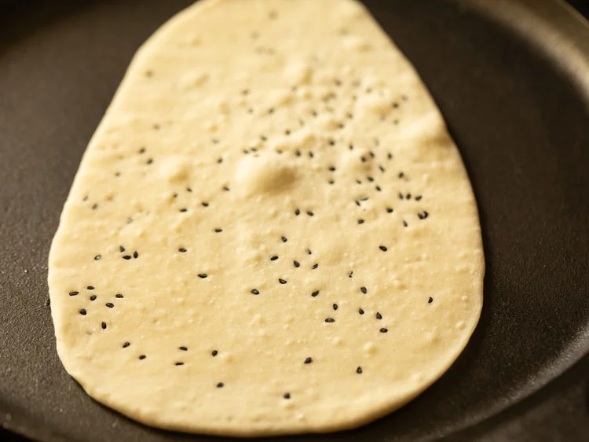

Naan Recipe
One of the most popular flatbreads in India and some South Asian countries, the Naan Bread is made with a leavened dough. Here’s my tried and tested Naan recipe to make these soft, slightly chewy and delicious flatbreads, without yeast. The incredibly easy one to make, if you find using yeast is a daunting affair. You can cook it on a griddle (tawa) or a skillet on a stovetop. Alternatively, grill in a tandoor or oven. Here I show 2 ways of roasting these breads – on the stovetop on direct flame and on the skillet.
This flatbread is a super common choice for us when dining at any North Indian or Mughlai restaurants or eateries. However, the Naan recipe is not a common one in Indian households as a staple. It is Roti, Paratha (unleavened flatbreads made with whole wheat flour or atta) that is made on a regular basis for our everyday meals.
How to make Naan Recipe
Prepare the Dough
1. In a mixing bowl, take ¼ cup fresh yogurt (curd). For a vegan option, use almond or cashew yogurt.
Ensure to use fresh yogurt and not overly sour or tangy one.

2. Add 1 teaspoon sugar, 1 teaspoon baking powder and 1 pinch baking soda. If you do not have baking soda, then skip it.s
3. With a spoon, mix all the ingredients very well till the sugar dissolves.
4. Now add 2 cups all-purpose flour, 1 teaspoon salt or add as required in the bowl. You can also use a mix of whole wheat flour and all purpose flour.
5. To evenly distribute the salt in the flour, mix again with a spoon.
6. Make a well in the center and add 2 tablespoons oil.
7. Add ¼ to ⅓ cup water or as required.
8. First mix and then begin to knead.
9. Knead to a smooth and soft dough.
If the yogurt is thick, then you may need to add more water. In case the dough looks dry, then add some more water and knead.
If it becomes sticky, then sprinkle some flour and knead again. You should get a soft stretchy dough. You can even use a stand mixer to knead the dough.

10. Flatten the dough. You can even spread some oil all over the dough, if you want. Place in the same bowl.
11. Place a moist kitchen towel or napkin completely covering the dough. Cover the bowl with a lid and let the dough leaven for 2 hours.
12. In the picture below, the dough has leavened after 2 hours.
Assemble & Roll
13. Make medium-sized balls from the dough.
14. Flatten slightly and sprinkle some flour on the dough as well as on the rolling board.
15. Sprinkle some nigella seeds (kalonji), sesame seeds (black or white) or melon seeds (magaz) on the rolled dough. I have added nigella seeds as they give a good flavor.
16. Roll to a 6 or 7 inches elongated circle.
17. Roll the top side to get a tapering edge. You can even gently pull the dough with your hands to get this pointed edge. The Naan will have a tear-shaped form.
Roast on Stovetop
18. Heat a heavy griddle, tawa or skillet and keep on medium-high to high heat. Place the flatbread on the hot tawa, skillet or griddle.
19. Keep the heat to medium-high or high and begin to cook the bread.
20. Cook one side partly. You will see a few air pockets on the flatbread.
21. When you start seeing the air-pockets, then flip using tongs or spatula.
22. Now, cook the second side on medium-high to high heat.
23. Again, you will see air-pockets appearing on the second side. Flip when you see many air-pockets on the bread. Cook the second side more than the first side.
24. You have to flip it using tongs and place it directly on the stovetop heat.
25. Grill the first side on heat till you see some charred spots and blisters.
26. Roast the edges too.
27. Turn over and roast the second side too till you see some charred spots. Avoid fire roasting too much as then the flatbread becomes crispy.
28. Place it on a plate or tray. Spread or brush some softened butter or melted butter on it. You can even use ghee (clarified butter).
For a vegan version, use neutral flavored oil. You can even skip using butter or oil entirely.

Make Naan on Tawa/Skillet
29. Heat a heavy griddle or skillet on a high flame. Place the rolled dough on the hot tawa or skillet or griddle.
30. You will see some air pockets on the flatbread.
31. Flip the flatbread.
32. Cook the second side more than the first side. Too cook faster, cook on high heat.
33. To cook the edges properly, press them with a spatula.
34. Flip again.
35. You can flip again and press the edges for even cooking. Remove and spread some butter or oil.
This way prepare Naan in batches with either of these 2 methods. You can even stack cooked Naans in a casserole box or roti basket and serve later.

36. Serve Naan hot or warm with your favorite curry or lentil dish.
Storage Suggestions
The dough can be refrigerated for 3 to 4 days or frozen for up to 4 to 5 weeks. Since yogurt is added to the dough, avoid freezing it beyond this time.
To freeze, place the dough in an airtight box and store in the freezer. Thaw completely at room temperature before rolling and toasting.
Prepared naan can be refrigerated for a couple of days. Warm it on a skillet or in the oven before serving.